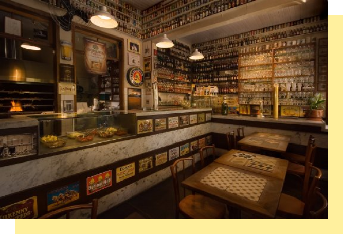

ParCão
O ParCão é um parque especializado para pessoas que tem cachorros em casa, pois tem cercados, para o cachorro não sair do parque e tem até áreas especializadas para o cachorro ficar, é bom pra o cachorro dar uma corrida e se exercitar. O parque também é amigável pra sua família, pois não é muito grande e tem parquinhos para as crianças.

Praça da Matriz
A praça da matriz é um ponto de referência no mapa da Freguesia do Ó, pois é muito icônica, tanto a igreja quanto os bares e restaurantes que ficam do lado da praça, é um lugar grande o suficiente para dar uma volta andando, porém a principal atração é a igreja da matriz.

Oh Freguês
O Oh Freguês é um bar que tem um tema de tradicionalizar os bares antigos de São Paulo, porém esse bar é uma experiência, pois você pode fazer seu pedido e consumir na cobertura do estabelecimento, e com uma vista muito boa!

Frangó
O Frangó é um ponto na freguesia, pois é um bar que está de pé desde 87, localizado na praça da matriz, é um restaurante/bar que é muito tradicional, a comida lá é muito boa, alguns até dizem que lá tem a melhor coxinha de frango de São Paulo.

Casa dos Bruxos
A casa dos bruxos é uma hamburgueria temática de Harry Potter, incluindo até a famosa cerveja amanteigada no seun cardápio, é realmente uma experiência comer lá, pois o restaurante é todo decorado com a temática dos filmes.